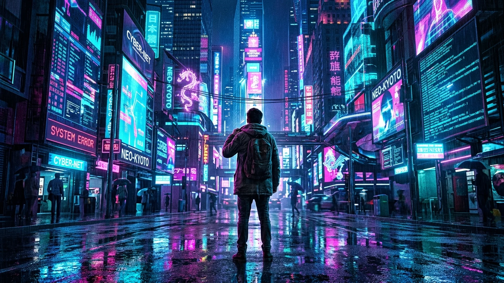

The Glitch in the Machine
A Symphony of Digital Dissonance and Human Resonance
An immersive 15-track sonic exploration of modern consciousness caught inside the attention economy. Tracing the seductive descent into screen saturation, algorithmic dopamine loops, and manufactured tribal rage—culminating in the radical, courageous awakening of unplugging the cord, touching the living soil, and reclaiming our minds from the corporate machine.
“While the system may try to turn our attention into currency and our minds into code, the human spirit remains an unpatchable error—a living, breathing glitch that can never truly be controlled.”
— The Shady River Bard
The 15-Track Jukebox & Narrative Arc
Stream the complete 4-act journey with synchronized pure literary lyrics, psychological mechanisms, and structural deconstructions.
Neon Glow
"The seductive gateway into the glowing digital promised land."
Loading analytical mechanism...
Loading narrative storytelling...
The Five Thematic Exhibits
A deep analytical examination of screen addiction, the attention economy, cognitive erosion, and the triumph of human presence.

Exhibit I: Digital Overload & The Attention Economy
Herbert Simon's Paradox & The Commodification of Focus
“A wealth of information creates a poverty of attention and a need to allocate that attention efficiently among the overabundance of information sources that might consume it.”
In the modern economic apparatus, human attention has become the ultimate scarce commodity. What began as tools for communication has evolved into a global architecture engineered to maximize engagement through synthetic scarcity, outrage amplification, and relentless dopamine conditioning.
The songs 'Neon Glow', 'The Feed', and 'Commodity Soul' dissect this transaction. When our focus is continuously harvested, we cease to be the patrons of technology and become the raw material—packaged, categorized, and traded on behavioral futures markets.
Systemic Thematic Elements Matrix
The structural mapping connecting systemic root causes, psychological and societal manifestations, and associated songs.
| Theme / Pillar | Core Systemic Causes | Manifestations & Consequences | Associated Tracks |
|---|---|---|---|
| Digital Overload | Excessive screen time, constant notification pings, media multitasking, always-on workplace demands. | Cognitive exhaustion, chronic anxiety, sleep disruption, eye strain, nervous system hyper-arousal, digital burnout. | Neon Glow, The Feed, Short Circuit, Static Sleep |
| The Attention Economy | Information abundance creating severe attention scarcity; monetization of personal data and leisure time under surveillance capitalism. | Commodification of human identity, manufactured insecurity, loss of cognitive autonomy, behavioral conditioning. | Commodity Soul, Reclaim My Mind |
| Shortened Attention Spans | Algorithmic micro-content loops, hyper-distractions, chronic lack of restorative sleep, sensory flooding. | Impaired deep focus, inability to engage in long-form synthesis or contemplation, compulsive instant gratification seeking. | Goldfish Mind, Soulless Code |
| FOMO & The Intimacy Deficit | Curated online highlight reels; asynchronous digital communication devoid of mirror-neuron resonance and physical micro-cues. | Severe loneliness, social skill atrophy, digital relationship anxiety, hollow validation chasing, chronic inadequacy. | FOMO Phantom, Digital Mirage, Flesh and Blood |
| Polarization & Cognitive Erosion | Cognitive offloading to automated algorithms; passive information ingestion; engagement-driven algorithmic outrage amplification. | Manufactured tribal realities, horizontal hostility, loss of independent critical thought, fractured democratic discourse. | Curated Cage, Soulless Code, Us Versus Them, Reclaim My Mind |